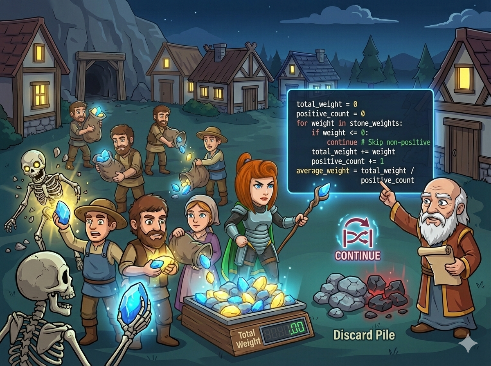

十位农民带回了 10 袋矿石。但是里面混有“捣蛋石”！
规则如下：
英雄需要写一个程序，利用 Continue 魔法，跳过坏石头，只计算好石头的奖励。
这道题的核心是“遇到坏的就跳过，不影响计数”。
do { ... } while (条件);
我们固定要处理 10 个农民的数据，所以至少会执行一次。
当检测到 x <= 0 时，执行 continue;。
🚀 效果： 直接跳过当前循环剩下的语句（不加分、不计数），直接进入下一次循环判断。
⚠️ 注意： 使用 do-while 或 while 时，千万别忘了在 continue 之前也要把循环变量 i 加 1，否则会死循环！
当检测到 x <= 0 时，执行 continue。
程序会立刻回到循环开头，去处理下一个数字，下面的代码（累加、计数）通通不执行。
如果一个正数都没有（cnt=0），除以 0 会报错！所以最后要判断 if cnt > 0。
使用 do-while 循环，并在跳过前更新计数器 i。
#include <iostream> #include <iomanip> // 用于保留小数 using namespace std; int main() { int i = 0; // 循环了多少次 (一共10次) int sum = 0; // 正数总和 int cnt = 0; // 正数个数 int x; // 当前读入的石头 do { cin >> x; i++; // 处理了一个数字，i必须先加，防止continue跳过它 // 如果是捣蛋石(非正数)，跳过 if (x <= 0) { continue; } // 如果是好石头，统计它 sum += x; cnt++; } while (i < 10); // 1. 输出总和 cout << sum << endl; // 2. 输出平均数 (注意 cnt 可能为 0) if (cnt > 0) { double avg = 1.0 * sum / cnt; // 乘 1.0 变成小数除法 cout << fixed << setprecision(1) << avg << endl; } else { cout << "0.0" << endl; } return 0; }
简单变量名，无 main 函数，逻辑清晰。
# 一次性读入所有石头，转成列表 nums = list(map(int, input().split())) i = 0 # 循环计数 sum = 0 # 正数总和 cnt = 0 # 正数个数 while i < 10: x = nums[i] # 取出第 i 个数 i += 1 # 准备处理下一个 # 如果是捣蛋石，跳过 if x <= 0: continue # 好石头，加进去 sum += x cnt += 1 # 1. 输出总和 print(sum) # 2. 输出平均数 if cnt > 0: avg = sum / cnt print(f"{avg}:.1f") # 保留1位小数 else: print("0.0")